This week’s task was about focusing on analyzing the progress on my running goals and to then determine a “Content Experiment” that I could run on my site to enhance the performance of my goal(s).
Analysis
After reviewing my Google Analytics dashboard four days after setting up my original goal; nobody is completing my goal of simply clicking the URL in my User Science Journal Post. This could be attributed to the simple fact that my assigned peer review has not had time to review my post from last week, however, I cannot assume that and must proceed further with creating an A/B Testing experiment.
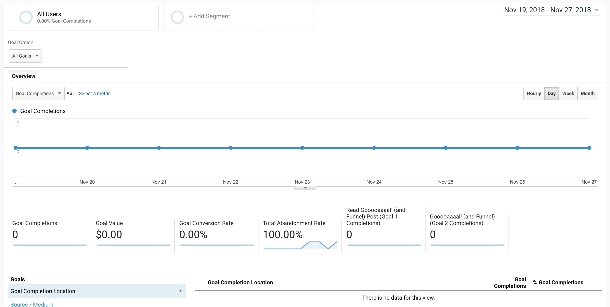 Google Analytics Goal Overview (Conversions report)I checked my dashboard again on Thursday and still showed 0 completed goals; this prompted me to reach out to my professor on Slack for assistance into identifying if I set up my goal incorrectly. We were able to troubleshoot it and discovered that somehow my Google Analytics dashboard was capturing the completed goals under events instead of goals. I am still unsure as to the reasoning behind this.
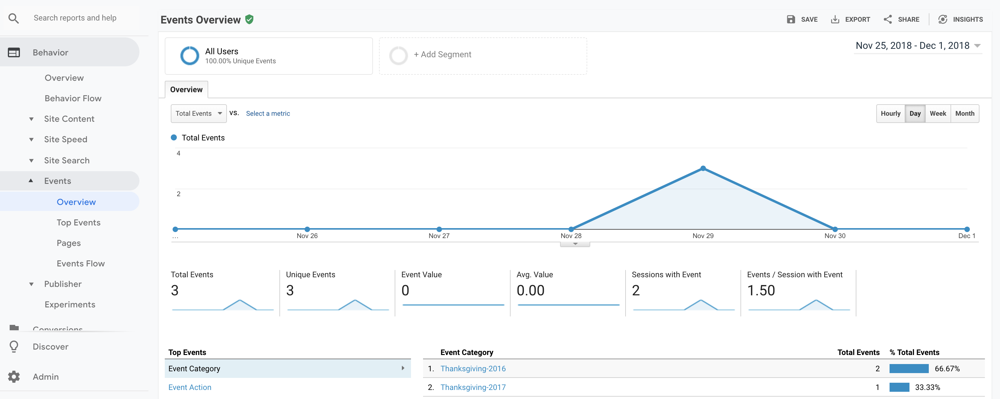 Google Analytics Events Overview (Behavior report)Goal Funnel Visualization
It is unclear to see if people are even beginning to move down my goal funnel since the goal I set up last week is capturing these as events rather than goal completions, however looking at my funnel visualization that only 25% of visitors will proceed to a post in my journal after landing on the homepage. Further analysis reveals that zero visitors who visit my site directly proceed to my most recent post where my goal is located.
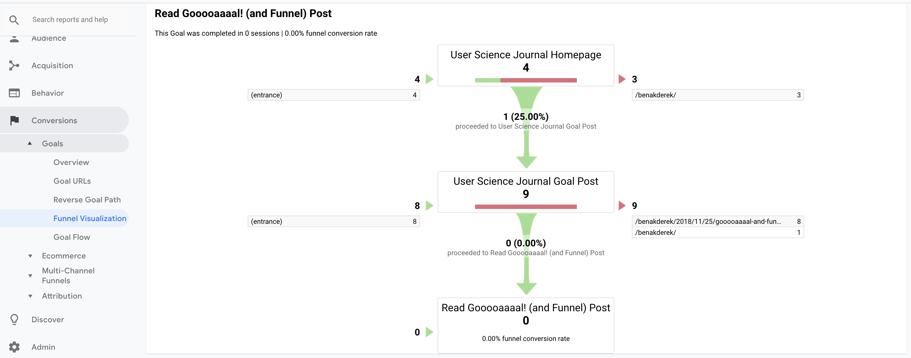 Google Analytics Funnel Visualization - Conversions reportChanges
After analyzing this data from the perspective of a potential first-time viewer, I think there are a combination of reasons for why viewers are not completing my goal(s) and staying on my site for long.
Firstly the image above illustrates to me that I am not generating enough interest to keep visitors on my site and explore other pages. In terms of my goal since it was originally intended to be a simple destination (click) goal it makes me believe that I need to add keywords onto each post since people will be searching for the value-added part of each post rather than reading the entire post, in my opinion.
It would make it much easier and time saving if I added a button or contrasting colors to grab the visitor's attention and almost "dare" them to click on the URL thereby completing my goal.
Experiment
To help my visitors complete the goal I set up last week, I set-up an experiment using Google’s Optimize. A newly released tool that helps web developers and marketers increase visitor conversion rates and overall visitor satisfaction by testing different combinations of website content leading to a better user experience. This can be quickly explained as a new A/B testing service.
Set-up: To begin setting up my experiment, I went into the Behavior report and clicked on experiments. Google has a Learn More option that a web developer has to click to access the Google Optimize dashboard. I hypothesize this isn’t being heavily marketed- right now is that it’s still in beta testing and Google doesn’t want to alienate users who are still comfortable with the old experiment process.Upon entering the dashboard, I had to create a new account which was simple since most of my Google Analytics account was imported in as default.
The next step was to create a new experience which uses the original URL for my post last week that has my goal in it using A/B testing.
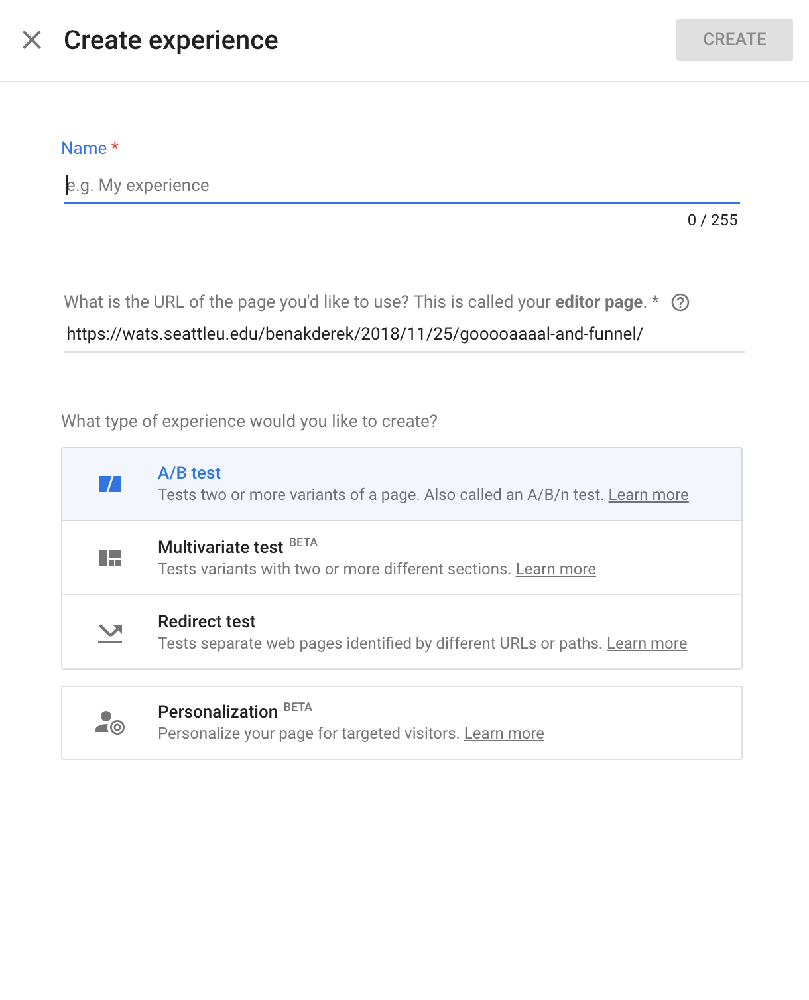 Setting up A/B testing with Google AnalyticsThe next step was to create a variant from my original post, that required me to download and install the Optimize Chrome extension. This is automatically prompted upon clicking create variant. After installation is complete, then you return back to the Optimize dashboard and click Variant 1 and this will take you to a mock page for your original page. A/B testing is intended to be simple/subtle changes that are intended to see how they impact traffic. I changed the order of my goals/URLs to have 2016 Thanksgiving data first and 2017 Thanksgiving data second instead of 2017 Thanksgiving data on the top and 2016 Thanksgiving data on the bottom.
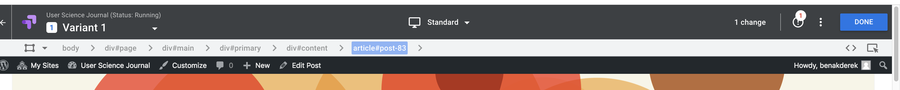 The Variant Menu for A/B Testing with Google AnalyticsAfter I completed the changes referenced above after I clicked Save and Done then was returned to my Optimize Dashboard with my variant indicating one change from the original.
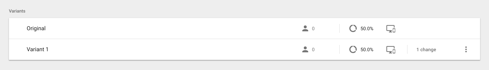 A variant successfully created in Google Analytics for A/B testingThe next step was to install the Optimize code to run my experiment. To do this I had to link property which defaulted to my User Science Journal. There were code snippets that I had to copy/paste into my WordPress blog in the Header and Footer Scripts. This required me to replace my old Google Analytics code with this new code.
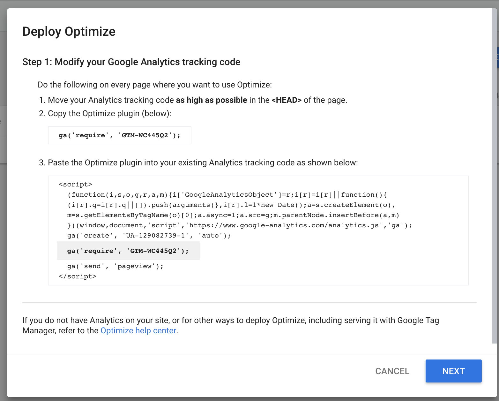 Google Optimize Code Snippet Step Onensure that the variant testing is successful there is a second code snippet to minimize page flickering if JavaScript were to load the original page first rather than the variant due to algorithms.
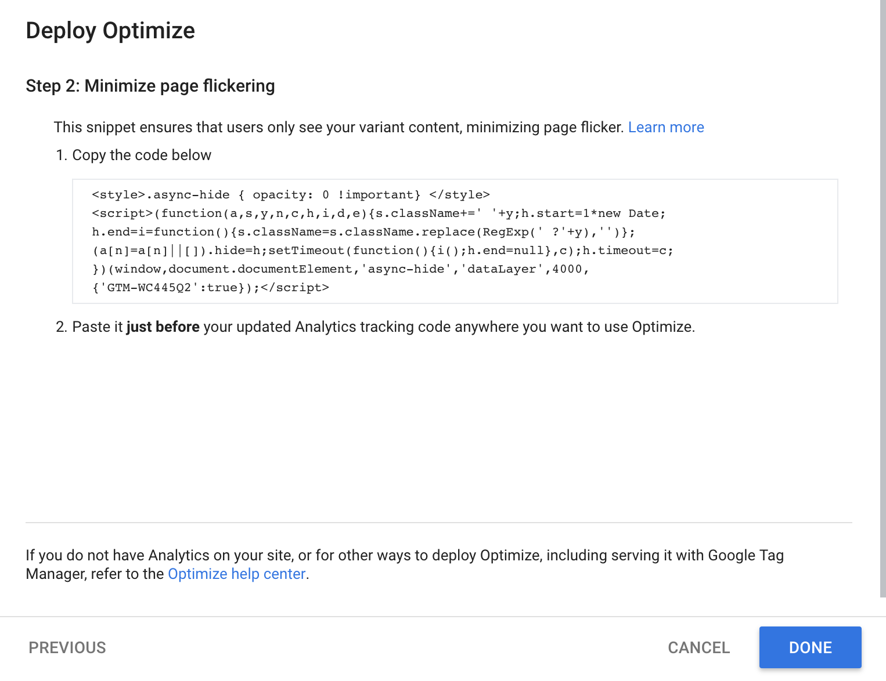 Google Optimize Code Snippet Step TwoThis linked my content and now I had to create an experiment objective. I decided to create a custom objective rather than choose from a list.
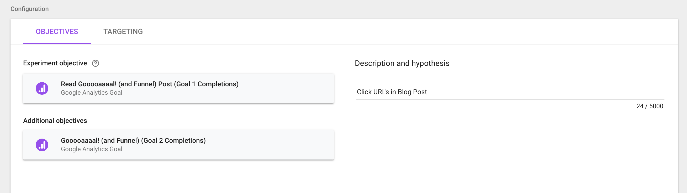 Objectives for A/B TestingAfter I created my objectives, I had to run a system diagnostic to verify that I installed the Optimize Code correctly in my WordPress site and successfully setup my objectives for this A/B testing experiment.
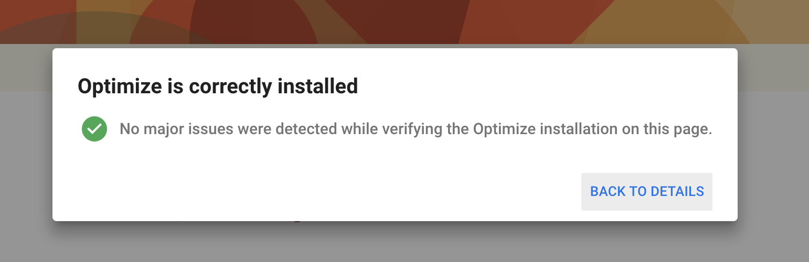 Optimize System Diagnostic ResultAt this point, all I had to do was start my experiment indicating that I was satisfied with all the changes, schedule and objectives for this A/B testing.
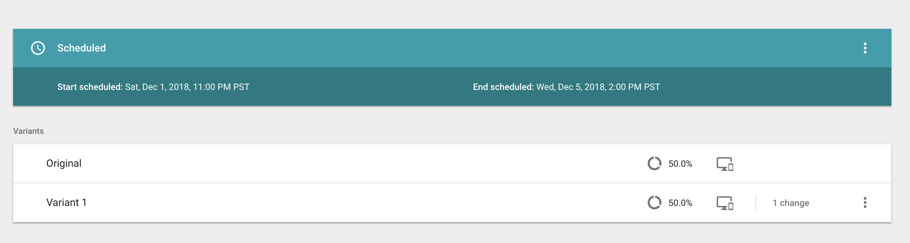 A/B Experiment ScehduledTesting
To avoid the error that I experienced when analyzing my data from last week, I logged into my Google Optimize account to verify that my experiment was running.
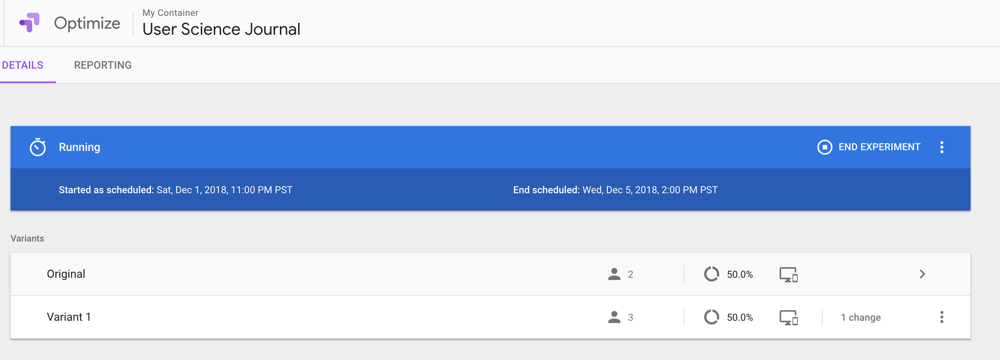 A/B Experiment RunningI followed my professor's example by copying the web address to my original post in an incognito browser. I opened it up three times, the first time gave me the variant and the third time eventually loaded the original post.
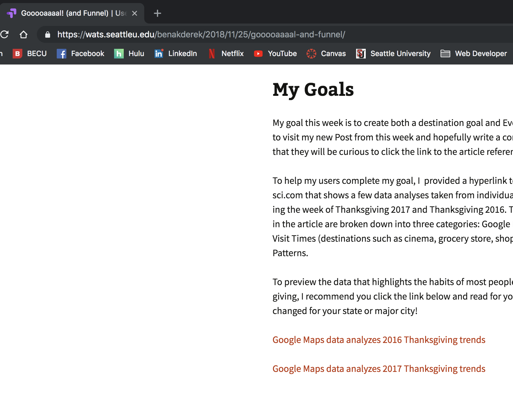 The Variant page shown to visitors 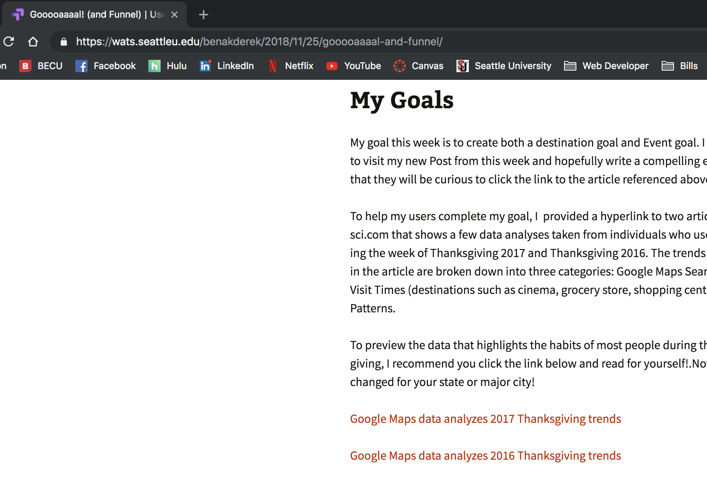 The original page